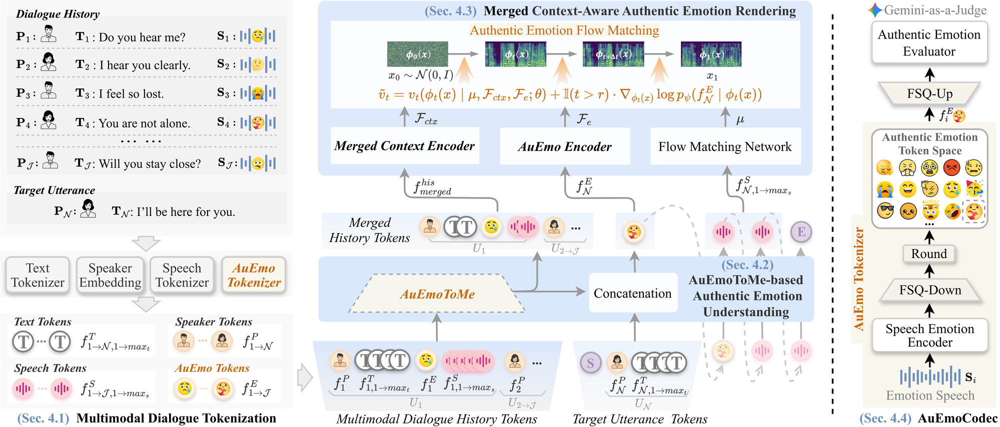

1. Abstract
Conversational Speech Synthesis (CSS) aims to synthesize speech with human-like emotional expression and contextual consistency in user-agent interactions. Existing CSS methods struggle to render authentic human emotions due to limited predefined emotion label spaces (e.g., seven emotion categories), while redundant multimodal tokens in multi-turn dialogue history interfere with context understanding. To address these issues, we propose AuEmoChat, a CSS framework for authentic emotion understanding and rendering. First, we develop AuEmoCodec, which learns a discrete authentic emotion token space from large-scale emotional speech via finite scalar quantization, enabling a more authentic emotion representation than limited basic emotion categories. We further propose AuEmoToMe, an authentic-emotion-guided token merging algorithm that merges redundant tokens in multimodal dialogue history while preserving emotion-relevant context. We integrate it into an autoregressive text-speech model to predict the target authentic emotion token and speech tokens. Finally, we propose Authentic Emotion Flow Matching, which renders speech by jointly conditioning on merged dialogue context, target authentic emotion, and acoustic priors. Extensive experiments on the NCSSD-EmCap dataset demonstrate that AuEmoChat outperforms state-of-the-art CSS baselines and generates more expressive and authentic emotional speech. The code and speech demos will be available at:
https://github.com/anonymous-css/AuEmoChat.
2. Model Architecture

Figure 1: The left side illustrates the overall framework of the proposed AuEmoChat, which includes: Multimodal Dialogue Tokenization, AuEmoToMe-based Authentic Emotion Understanding, and Merged Context-Aware Authentic Emotion Rendering. The right side illustrates the overall framework of the proposed AuEmoCodec.
3. Comparison with SOTA CSS Methods
Comparative Experiment:
1) BaseCSS employs a coarse-grained context encoder to model dialogue history for improving speech quality. In our implementation, we additionally introduce an authentic emotion encoder to incorporate authentic emotion representations. [PAPER]
2) ECSS introduces a heterogeneous graph context encoder to model multimodal dialogue history in a structured manner, enabling better inference of the target authentic emotion and more expressive speech generation. [PAPER]
3) GPT-Talker represents the multimodal information in dialogue history as a sequence of discrete tokens containing semantic and stylistic information, and leverages the sequence prediction capability of a pretrained autoregressive model to generate the semantic and acoustic tokens of the response, followed by VITS for expressive conversational speech synthesis. In our implementation, we further introduce authentic emotion tokens into each utterance in the dialogue sequence to enhance its emotion modeling capability. [PAPER]
4) Chain-Talker adopts a three-stage framework consisting of emotion understanding, semantic understanding, and empathy rendering. It improves context modeling by predicting emotion and semantic captions from multimodal dialogue history, thereby enhancing the empathetic expression of synthesized speech. [PAPER]
Sample 1: Good. That’s something unusual.
(Source: DailyTalk)
| Conversation history | text | speech |
|---|---|---|
| 1th | Sheila, what time should we meet tomorrow? | |
| 2th | The usual time. Half past two in the afternoon. | |
| 3th | What place? | |
| 4th | The usual place. In front of the treasure house. | |
| 5th | And what should I wear? | |
| 6th | Your usual shirt and shoes. | |
| 7th | What are you going to wear? | |
| 8th | Nothing unusual, I’m afraid. | |
| 9th | Sheila, how about that fashionable blue dress? |
| Comparative |
|---|
| current | text | BaseCSS | ECSS | GPT-Talker | Chain-Talker | Ours |
|---|---|---|---|---|---|---|
| 10th | Good. That’s something unusual. |
Sample 2: I went to visit an uncle in San Francisco.
(Source: DailyTalk)
| Conversation history | text | speech |
|---|---|---|
| 1th | Long time no see! | |
| 2th | Yes. It has been a long time since the last time we met. | |
| 3th | It's nice to see you again. Have you changed jobs? | |
| 4th | No. I've been visiting relatives recently. | |
| 5th | That's nice. Where have you been? |
| Comparative |
|---|
| current | text | BaseCSS | ECSS | GPT-Talker | Chain-Talker | Ours |
|---|---|---|---|---|---|---|
| 6th | I went to visit an uncle in San Francisco. |
Sample 3: And we all know how the news on facebook is too sad crazy how far internet has come did you know you can get cell service on top of mt everest.
(Source: MultiDialog)
| Conversation history | text | speech |
|---|---|---|
| 1th | Good morning do you have a facebook account. | |
| 2th | Yes i do have a facebook account i mostly just use it for remembering birthdays though haha what about you. | |
| 3th | Same here and for the same reason haha i cant believe myspace turned down the offer to buy it for seventyfive million dollars in two thousand five. | |
| 4th | That seems really dumb also dumb is that a third of divorce filings actually contain the word facebook so i wonder what that is all about. | |
| 5th | Yes me too its sad weve come to that haha i thought it was funny when burger king had the promotion where you could get a free whopper if you unfriended ten friends i would be eating so good haha. | |
| 6th | Yes i wish they still had that haha i would be eating some burgers right now what is sad though is that thirty of adults use facebook as their source of news. |
| Comparative |
|---|
| current | text | BaseCSS | ECSS | GPT-Talker | Chain-Talker | Ours |
|---|---|---|---|---|---|---|
| 7th | And we all know how the news on facebook is too sad crazy how far internet has come did you know you can get cell service on top of mt everest. |
Sample 4: Ha thats funny did you know the first president of zimbabwe was called president banana.
(Source: MultiDialog)
| Conversation history | text | speech |
|---|---|---|
| 1th | Hi, how are you. | |
| 2th | Great how about you did you know that dogs are not color blind a lot of people think they are. | |
| 3th | I thought they were too dogs can have twelve different blood types. | |
| 4th | Wow thats a lot of different blood types did you know that google prefers dogs over cats i guess its in their code of conduct. | |
| 5th | Thats a company that i could work for aol was probably a cat company. |
| Comparative |
|---|
| current | text | BaseCSS | ECSS | GPT-Talker | Chain-Talker | Ours |
|---|---|---|---|---|---|---|
| 6th | Ha thats funny did you know the first president of zimbabwe was called president banana. |
Sample 5: Yeah, wouldn't that be great? Maybe someday we'll come up with a solution for that.
(Source: NCSSD)
| Conversation history | text | speech |
|---|---|---|
| 1th | Why is the traffic signal always red when I'm in a hurry? | |
| 2th | I know it's so frustrating. It feels like it's entirely trying to slow us down. | |
| 3th | Exactly, it's like the traffic signal has a personal video against me. | |
| 4th | I feel the same way. It's infuriating to be stuck at every red light. | |
| 5th | I wish you was a way to avoid these traffic signals altogether. |
| Comparative |
|---|
| current | text | BaseCSS | ECSS | GPT-Talker | Chain-Talker | Ours |
|---|---|---|---|---|---|---|
| 6th | Yeah, wouldn't that be great? Maybe someday we'll come up with a solution for that. |
Sample 6: That's cool. I should start following some as well.
(Source: NCSSD)
| Conversation history | text | speech |
|---|---|---|
| 1th | Networks, celebrities are gaining more and more popularity these days. | |
| 2th | Yeah, I've noticed that that too. It is interesting how they can influence so many people. | |
| 3th | Definitely the reach and impact are impressive. | |
| 4th | Do you follow any specific network celebrities? | |
| 5th | Yes, I'm a big fan of a few. They provide great content and insights. |
| Comparative |
|---|
| current | text | BaseCSS | ECSS | GPT-Talker | Chain-Talker | Ours |
|---|---|---|---|---|---|---|
| 6th | That's cool. I should start following some as well. |